- 00 开篇寄语：缓存，你真的用对了吗？.md.html
- 01 业务数据访问性能太低怎么办？.md.html
- 02 如何根据业务来选择缓存模式和组件？.md.html
- 03 设计缓存架构时需要考量哪些因素？.md.html
- 04 缓存失效、穿透和雪崩问题怎么处理？.md.html
- 05 缓存数据不一致和并发竞争怎么处理？.md.html
- 06 Hot Key和Big Key引发的问题怎么应对？.md.html
- 07 MC为何是应用最广泛的缓存组件？.md.html
- 08 MC系统架构是如何布局的？.md.html
- 09 MC是如何使用多线程和状态机来处理请求命令的？.md.html
- 10 MC是怎么定位key的.md.html
- 11 MC如何淘汰冷key和失效key.md.html
- 12 为何MC能长期维持高性能读写？.md.html
- 13 如何完整学习MC协议及优化client访问？.md.html
- 14 大数据时代，MC如何应对新的常见问题？.md.html
- 15 如何深入理解、应用及扩展 Twemproxy？.md.html
- 16 常用的缓存组件Redis是如何运行的？.md.html
- 17 如何理解、选择并使用Redis的核心数据类型？.md.html
- 18 Redis协议的请求和响应有哪些“套路”可循？.md.html
- 19 Redis系统架构中各个处理模块是干什么的？.md.html
- 20 Redis如何处理文件事件和时间事件？.md.html
- 21 Redis读取请求数据后，如何进行协议解析和处理.md.html
- 22 怎么认识和应用Redis内部数据结构？.md.html
- 23 Redis是如何淘汰key的？.md.html
- 24 Redis崩溃后，如何进行数据恢复的？.md.html
- 25 Redis是如何处理容易超时的系统调用的？.md.html
- 26 如何大幅成倍提升Redis处理性能？.md.html
- 27 Redis是如何进行主从复制的？.md.html
- 28 如何构建一个高性能、易扩展的Redis集群？.md.html
- 29 从容应对亿级QPS访问，Redis还缺少什么？.md.html
- 30 面对海量数据，为什么无法设计出完美的分布式缓存体系？.md.html
- 31 如何设计足够可靠的分布式缓存体系，以满足大中型移动互联网系统的需要？.md.html
- 32 一个典型的分布式缓存系统是什么样的？.md.html
- 33 如何为秒杀系统设计缓存体系？.md.html
- 34 如何为海量计数场景设计缓存体系？.md.html
- 35 如何为社交feed场景设计缓存体系？.md.html
22 怎么认识和应用Redis内部数据结构？
上一课时，我们学习了 Redis 协议解析及处理，接下来，看一下 Redis 的内部数据结构是什么样的？
Redis 内部数据结构
RdeisDb
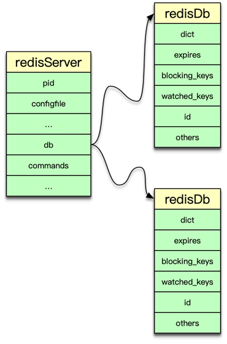
Redis 中所有数据都保存在 DB 中，一个 Redis 默认最多支持 16 个 DB。Redis 中的每个 DB 都对应一个 redisDb 结构，即每个 Redis 实例，默认有 16 个 redisDb。用户访问时，默认使用的是 0 号 DB，可以通过 select $dbID 在不同 DB 之间切换。
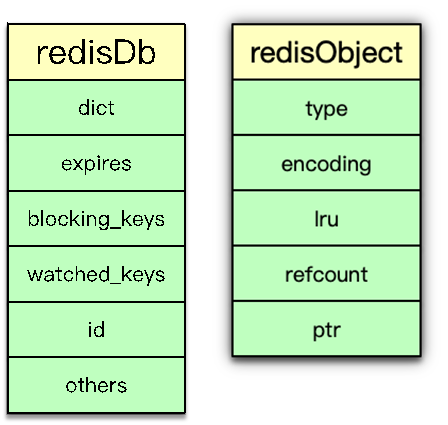
redisDb 主要包括 2 个核心 dict 字典、3 个非核心 dict 字典、dbID 和其他辅助属性。2 个核心 dict 包括一个 dict 主字典和一个 expires 过期字典。主 dict 字典用来存储当前 DB 中的所有数据，它将 key 和各种数据类型的 value 关联起来，该 dict 也称 key space。过期字典用来存储过期时间 key，存的是 key 与过期时间的映射。日常的数据存储和访问基本都会访问到 redisDb 中的这两个 dict。
3 个非核心 dict 包括一个字段名叫 blocking_keys 的阻塞 dict，一个字段名叫 ready_keys 的解除阻塞 dict，还有一个是字段名叫 watched_keys 的 watch 监控 dict。
在执行 Redis 中 list 的阻塞命令 blpop、brpop 或者 brpoplpush 时，如果对应的 list 列表为空，Redis 就会将对应的 client 设为阻塞状态，同时将该 client 添加到 DB 中 blocking_keys 这个阻塞 dict。所以该 dict 存储的是处于阻塞状态的 key 及 client 列表。
当有其他调用方在向某个 key 对应的 list 中增加元素时，Redis 会检测是否有 client 阻塞在这个 key 上，即检查 blocking_keys 中是否包含这个 key，如果有则会将这个 key 加入 read_keys 这个 dict 中。同时也会将这个 key 保存到 server 中的一个名叫 read_keys 的列表中。这样可以高效、不重复的插入及轮询。
当 client 使用 watch 指令来监控 key 时，这个 key 和 client 就会被保存到 watched_keys 这个 dict 中。redisDb 中可以保存所有的数据类型，而 Redis 中所有数据类型都是存放在一个叫 redisObject 的结构中。
redisObject
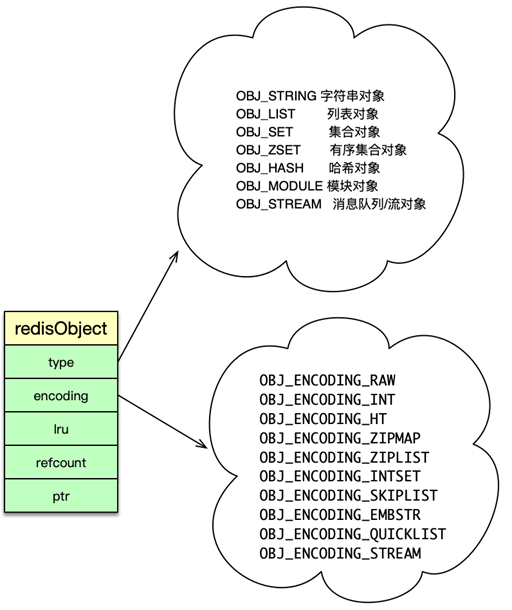
redisObject 由 5 个字段组成。
-
type：即 Redis 对象的数据类型，目前支持 7 种 type 类型，分别为
-
- OBJ_STRING
- OBJ_LIST
- OBJ_SET
- OBJ_ZSET
- OBJ_HASH
- OBJ_MODULE
- OBJ_STREAM
-
encoding：Redis 对象的内部编码方式，即内部数据结构类型，目前支持 10 种编码方式包括
-
- OBJ_ENCODING_RAW
- OBJ_ENCODING_INT
- OBJ_ENCODING_HT
- OBJ_ENCODING_ZIPLIST 等。
-
LRU：存储的是淘汰数据用的 LRU 时间或 LFU 频率及时间的数据。
-
refcount：记录 Redis 对象的引用计数，用来表示对象被共享的次数，共享使用时加 1，不再使用时减 1，当计数为 0 时表明该对象没有被使用，就会被释放，回收内存。
-
ptr：它指向对象的内部数据结构。比如一个代表 string 的对象，它的 ptr 可能指向一个 sds 或者一个 long 型整数。
dict
前面讲到，Redis 中的数据实际是存在 DB 中的 2 个核心 dict 字典中的。实际上 dict 也是 Redis 的一种使用广泛的内部数据结构。
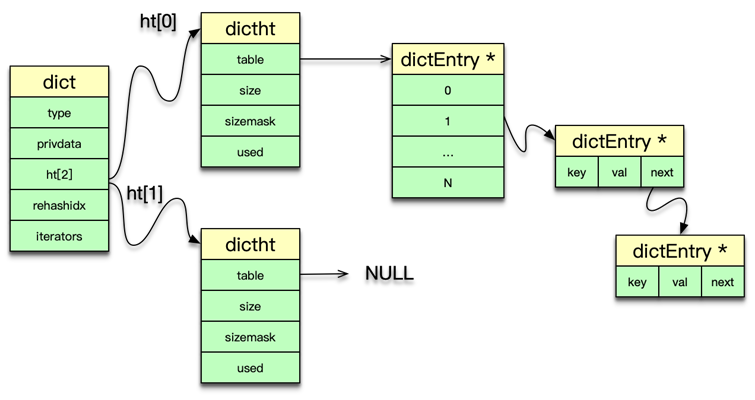
Redis 中的 dict，类似于 Memcached 中 hashtable。都可以用于 key 或元素的快速插入、更新和定位。dict 字典中，有一个长度为 2 的哈希表数组，日常访问用 0 号哈希表，如果 0 号哈希表元素过多，则分配一个 2 倍 0 号哈希表大小的空间给 1 号哈希表，然后进行逐步迁移，rehashidx 这个字段就是专门用来做标志迁移位置的。在哈希表操作中，采用单向链表来解决 hash 冲突问题。dict 中还有一个重要字段是 type，它用于保存 hash 函数及 key/value 赋值、比较函数。
dictht 中的 table 是一个 hash 表数组，每个桶指向一个 dictEntry 结构。dictht 采用 dictEntry 的单向链表来解决 hash 冲突问题。
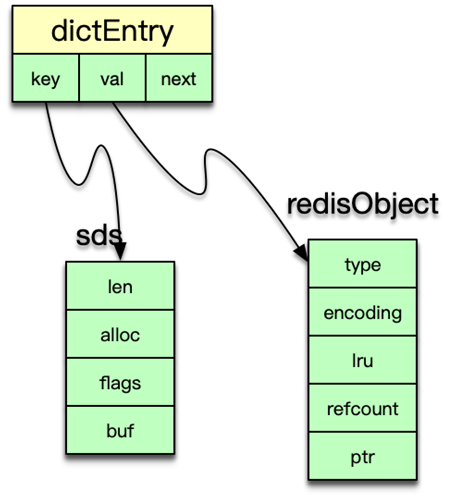
dictht 是以 dictEntry 来存 key-value 映射的。其中 key 是 sds 字符串，value 为存储各种数据类型的 redisObject 结构。
dict 可以被 redisDb 用来存储数据 key-value 及命令操作的辅助信息。还可以用来作为一些 Redis 数据类型的内部数据结构。dict 可以作为 set 集合的内部数据结构。在哈希的元素数超过 512 个，或者哈希中 value 大于 64 字节，dict 还被用作为哈希类型的内部数据结构。
sds
字符串是 Redis 中最常见的数据类型，其底层实现是简单动态字符串即 sds。简单动态字符串本质是一个 char*，内部通过 sdshdr 进行管理。sdshdr 有 4 个字段。len 为字符串实际长度，alloc 当前字节数组总共分配的内存大小。flags 记录当前字节数组的属性；buf 是存储字符串真正的值及末尾一个 \0。
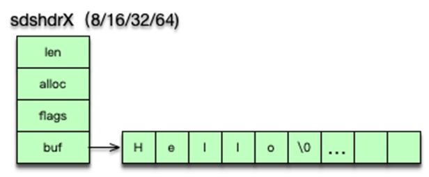
sds 的存储 buf 可以动态扩展或收缩，字符串长度不用遍历，可直接获得，修改和访问都很方便。由于 sds 中字符串存在 buf 数组中，长度由 len 定义，而不像传统字符串遇 0 停止，所以 sds 是二进制安全的，可以存放任何二进制的数据。

简单动态字符串 sds 的获取字符串长度很方便，通过 len 可以直接得到，而传统字符串需要对字符串进行遍历，时间复杂度为 O(n)。
sds 相比传统字符串多了一个 sdshdr，对于大量很短的字符串，这个 sdshdr 还是一个不小的开销。在 3.2 版本后，sds 会根据字符串实际的长度，选择不同的数据结构，以更好的提升内存效率。当前 sdshdr 结构分为 5 种子类型，分别为 sdshdr5、sdshdr8、sdshdr16、sdshdr32、sdshdr64。其中 sdshdr5 只有 flags 和 buf 字段，其他几种类型的 len 和 alloc 采用从 uint8_t 到 uint64_t 的不同类型，以节省内存空间。
sds 可以作为字符串的内部数据结构，同时 sds 也是 hyperloglog、bitmap 类型的内部数据结构。
ziplist
为了节约内存，并减少内存碎片，Redis 设计了 ziplist 压缩列表内部数据结构。压缩列表是一块连续的内存空间，可以连续存储多个元素，没有冗余空间，是一种连续内存数据块组成的顺序型内存结构。
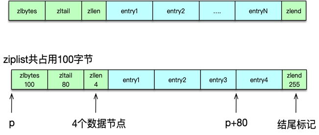
ziplist 的结构如图所示，主要包括 5 个部分。
- zlbytes 是压缩列表所占用的总内存字节数。
- Zltail 尾节点到起始位置的字节数。
- Zllen 总共包含的节点/内存块数。
- Entry 是 ziplist 保存的各个数据节点，这些数据点长度随意。
- Zlend 是一个魔数 255，用来标记压缩列表的结束。
如图所示，一个包含 4 个元素的 ziplist，总占用字节是 100bytes，该 ziplist 的起始元素的指针是 p，zltail 是 80，则第 4 个元素的指针是 P+80。
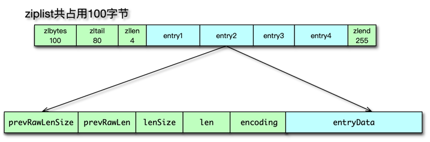
压缩列表 ziplist 的存储节点 entry 的结构如图，主要有 6 个字段。
- prevRawLen 是前置节点的长度；
- preRawLenSize 编码 preRawLen 需要的字节数；
- len 当前节点的长度；
- lensize 编码 len 所需要的字节数；
- encoding 当前节点所用的编码类型；
- entryData 当前节点数据。
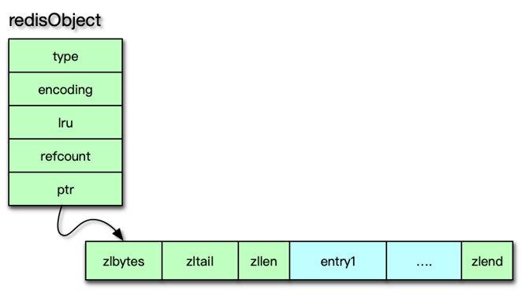
由于 ziplist 是连续紧凑存储，没有冗余空间，所以插入新的元素需要 realloc 扩展内存，所以如果 ziplist 占用空间太大，realloc 重新分配内存和拷贝的开销就会很大，所以 ziplist 不适合存储过多元素，也不适合存储过大的字符串。
因此只有在元素数和 value 数都不大的时候，ziplist 才作为 hash 和 zset 的内部数据结构。其中 hash 使用 ziplist 作为内部数据结构的限制时，元素数默认不超过 512 个，value 值默认不超过 64 字节。可以通过修改配置来调整 hash_max_ziplist_entries 、hash_max_ziplist_value 这两个阀值的大小。
zset 有序集合，使用 ziplist 作为内部数据结构的限制元素数默认不超过 128 个，value 值默认不超过 64 字节。可以通过修改配置来调整 zset_max_ziplist_entries 和 zset_max_ziplist_value 这两个阀值的大小。
quicklist
Redis 在 3.2 版本之后引入 quicklist，用以替换 linkedlist。因为 linkedlist 每个节点有前后指针，要占用 16 字节，而且每个节点独立分配内存，很容易加剧内存的碎片化。而 ziplist 由于紧凑型存储，增加元素需要 realloc，删除元素需要内存拷贝，天然不适合元素太多、value 太大的存储。
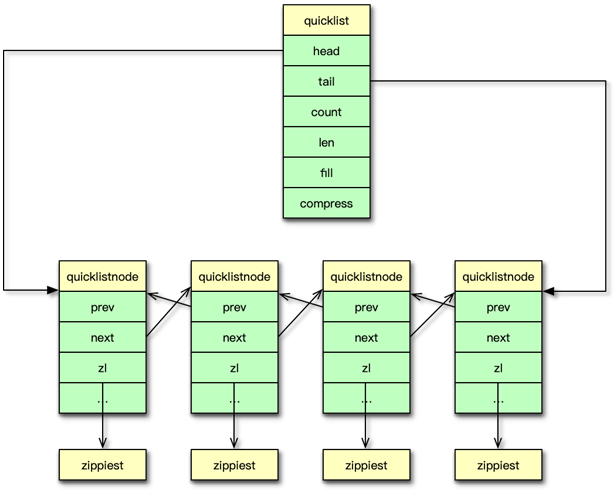
而 quicklist 快速列表应运而生，它是一个基于 ziplist 的双向链表。将数据分段存储到 ziplist，然后将这些 ziplist 用双向指针连接。快速列表的结构如图所示。
- head、tail 是两个指向第一个和最后一个 ziplist 节点的指针。
- count 是 quicklist 中所有的元素个数。
- len 是 ziplist 节点的个数。
- compress 是 LZF 算法的压缩深度。
快速列表中，管理 ziplist 的是 quicklistNode 结构。quicklistNode 主要包含一个 prev/next 双向指针，以及一个 ziplist 节点。单个 ziplist 节点可以存放多个元素。
快速列表从头尾读写数据很快，时间复杂度为 O(1)。也支持从中间任意位置插入或读写元素，但速度较慢，时间复杂度为 O(n)。快速列表当前主要作为 list 列表的内部数据结构。
zskiplist
跳跃表 zskiplist 是一种有序数据结构，它通过在每个节点维持多个指向其他节点的指针，从而可以加速访问。跳跃表支持平均 O(logN) 和最差 O(n) 复杂度的节点查找。在大部分场景，跳跃表的效率和平衡树接近，但跳跃表的实现比平衡树要简单，所以不少程序都用跳跃表来替换平衡树。
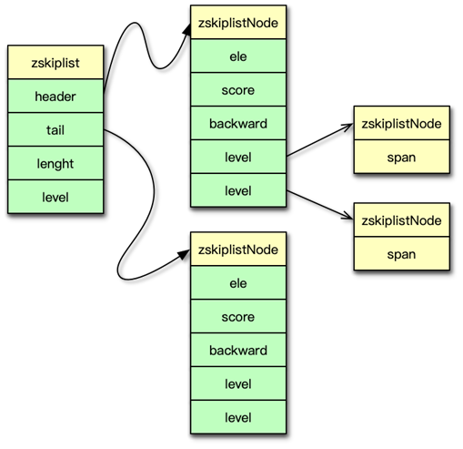
如果 sorted set 类型的元素数比较多或者元素比较大，Redis 就会选择跳跃表来作为 sorted set有序集合的内部数据结构。
跳跃表主要由 zskipList 和节点 zskiplistNode 构成。zskiplist 结构如图，header 指向跳跃表的表头节点。tail 指向跳跃表的表尾节点。length 表示跳跃表的长度，它是跳跃表中不包含表头节点的节点数量。level 是目前跳跃表内，除表头节点外的所有节点中，层数最大的那个节点的层数。
跳跃表的节点 zskiplistNode 的结构如图所示。ele 是节点对应的 sds 值，在 zset 有序集合中就是集合中的 field 元素。score 是节点的分数，通过 score，跳跃表中的节点自小到大依次排列。backward 是指向当前节点的前一个节点的指针。level 是节点中的层，每个节点一般有多个层。每个 level 层都带有两个属性，一个是 forwad 前进指针，它用于指向表尾方向的节点；另外一个是 span 跨度，它是指 forward 指向的节点到当前节点的距离。
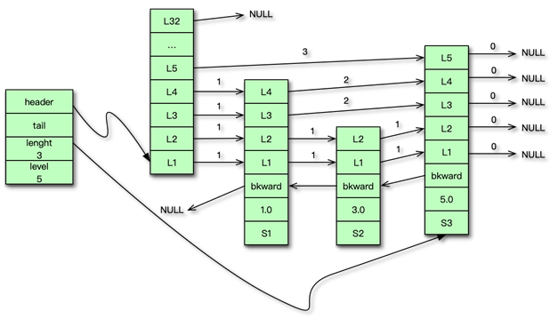
如图所示是一个跳跃表，它有 3 个节点。对应的元素值分别是 S1、S2 和 S3，分数值依次为 1.0、3.0 和 5.0。其中 S3 节点的 level 最大是 5，跳跃表的 level 是 5。header 指向表头节点，tail 指向表尾节点。在查到元素时，累加路径上的跨度即得到元素位置。在跳跃表中，元素必须是唯一的，但 score 可以相同。相同 score 的不同元素，按照字典序进行排序。
在 sorted set 数据类型中，如果元素数较多或元素长度较大，则使用跳跃表作为内部数据结构。默认元素数超过 128 或者最大元素的长度超过 64，此时有序集合就采用 zskiplist 进行存储。由于 geo 也采用有序集合类型来存储地理位置名称和位置 hash 值，所以在超过相同阀值后，也采用跳跃表进行存储。
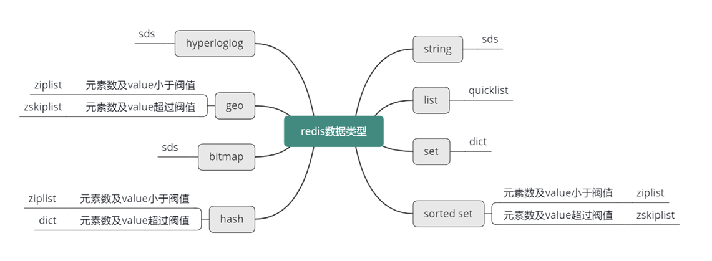
Redis 主要的内部数据结构讲完了，接下来整体看一下，之前讲的 8 种数据类型，具体都是采用哪种内部数据结构来存储的。
首先，对于 string 字符串，Redis 主要采用 sds 来进行存储。而对于 list 列表，Redis 采用 quicklist 进行存储。对于 set 集合类型，Redis 采用 dict 来进行存储。对于 sorted set 有序集合类型，如果元素数小于 128 且元素长度小于 64，则使用 ziplist 存储，否则使用 zskiplist 存储。对于哈希类型，如果元素数小于 512，并且元素长度小于 64，则用 ziplist 存储，否则使用 dict 字典存储。对于 hyperloglog，采用 sds 简单动态字符串存储。对于 geo，如果位置数小于 128，则使用 ziplist 存储，否则使用 zskiplist 存储。最后对于 bitmap，采用 sds 简单动态字符串存储。
除了这些主要的内部数据结构，还有在特殊场景下也会采用一些其他内部结构存储，比如，如果操作的字符串都是整数，同时指令是 incr、decr 等，会对字符串采用 long 型整数存储，这些场景比较特殊，限于时间关系，这里不做进一步阐述。